PARTNER ORGANIZATIONS
-
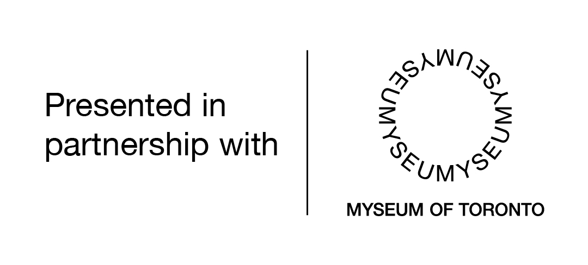
-
Venue provided by:
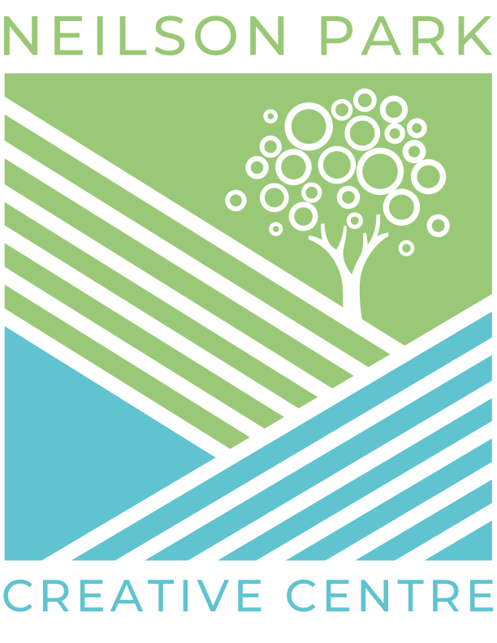 -
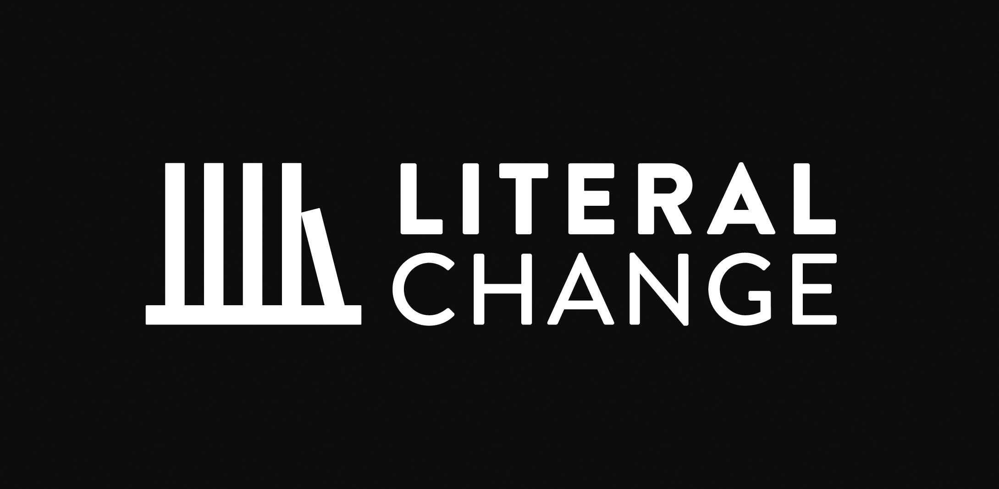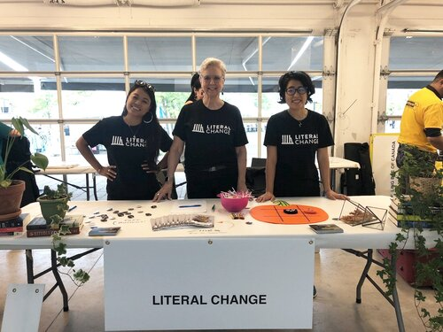
Literal Change
At Literal Change, we know that literacy is a right — not a privilege. That is why we are committed to bringing literacy education to system-impacted communities across Toronto and the GTA: everyone, regardless of circumstance, has the right to an education, the first step to gaining economic and social freedom.
-
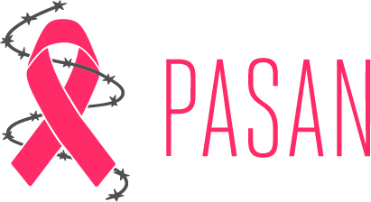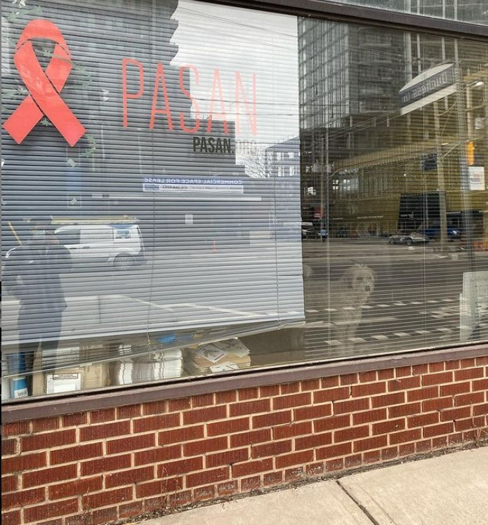
PASAN
PASAN is a community-based prisoner health and harm reduction organization that provides support, education and advocacy to prisoners and ex-prisoners across Canada.
-
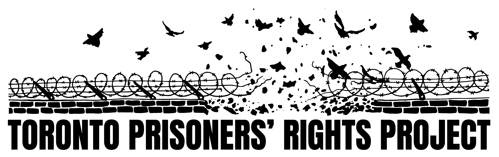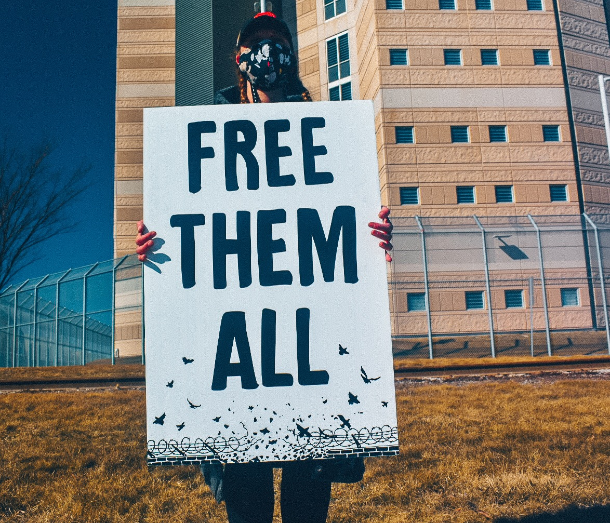
Toronto Prisoner's Rights Project
The Toronto Prisoner’s Rights Project (TPRP) is a volunteer organization of former prisoners, people with loved ones inside, front-line workers, researchers, educators, artists, and students. We engage in direct action, public education, and mutual aid to shed light on the harms of incarceration and connect prisoners with social, financial, legal and health supports. We are committed to abolition and building sustainable communities rooted in community care and transformative justice.
CURATORS
-
Defne Inceoglu
Defne Inceoglu, BA., MMSt., is a museum professional, researcher, communications specialist, graphic designer and literacy advocate. They have developed and undertaken research projects at major Toronto institutions such as the Royal Ontario Museum, the Museum of Contemporary Art Toronto and the Textile Museum of Canada. They volunteer as a low literacy / ESL tutor, and are active in advocacy groups in Parkdale, their neighbourhood.
-
Revital Weiss
Revital Weiss, BES, MMSt, is an arts education, public programming, and urban planning professional with experience in both land development and arts and culture. She has held education, engagement, and project assistant positions at small- to mid-sized institutions including the Koffler Gallery, FENSTER Gallery, the Miles Nadal Jewish Community Centre, and the Visual Ars Centre of Clarington. She is passionate about decolonizing institutionalized spaces through policy, engagement, and the arts, and has conducted research in areas of Indigenous street art, public art policy, social housing, and community engagement.
WEB-DESIGN
Dreeko is a Toronto-based developer, specializing in aesthetic web design.
Web-Design Consultant:Defne Inceoglu
-
Fonts
- COOLVETICA REGULAR
- Palatino
- Roboto Condensed
-
Artwork

Collageby Defne Inceoglu
-
Photos
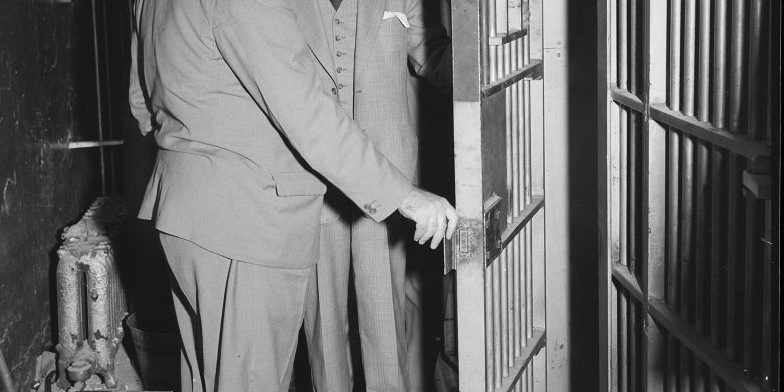City of Toronto Archives, Globe and Mail fonds, Fonds 1266, Item 148381
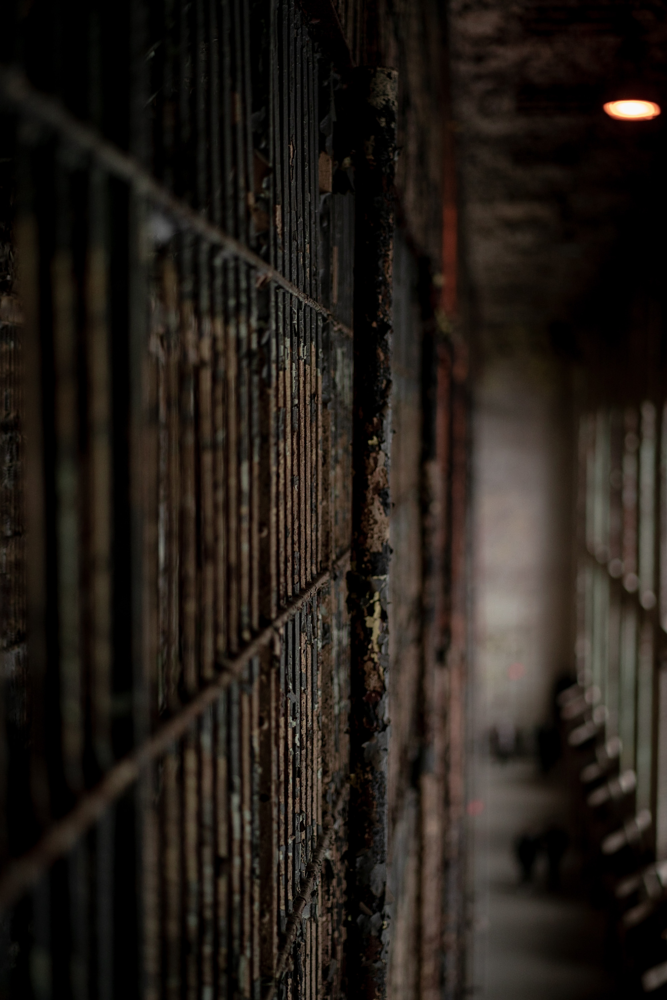by R.D. Smith (taken from Unsplash)
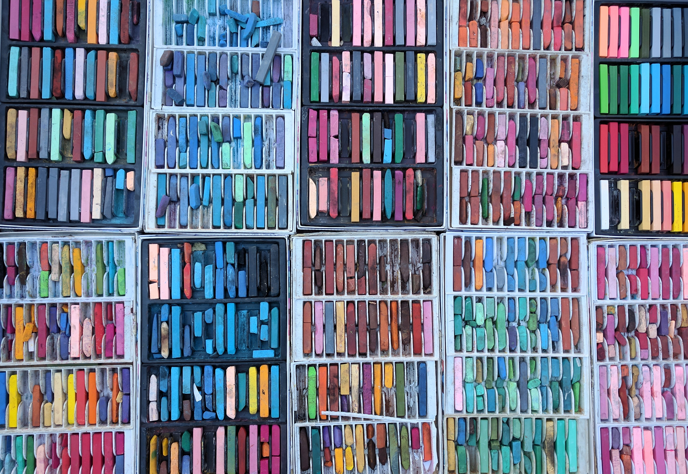by Peter F (taken from Unsplash)
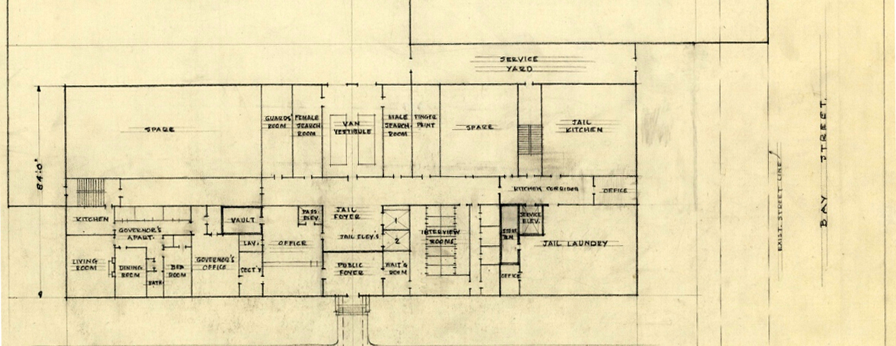Department of Buildings, Fonds 200, Series 2347, Item 511